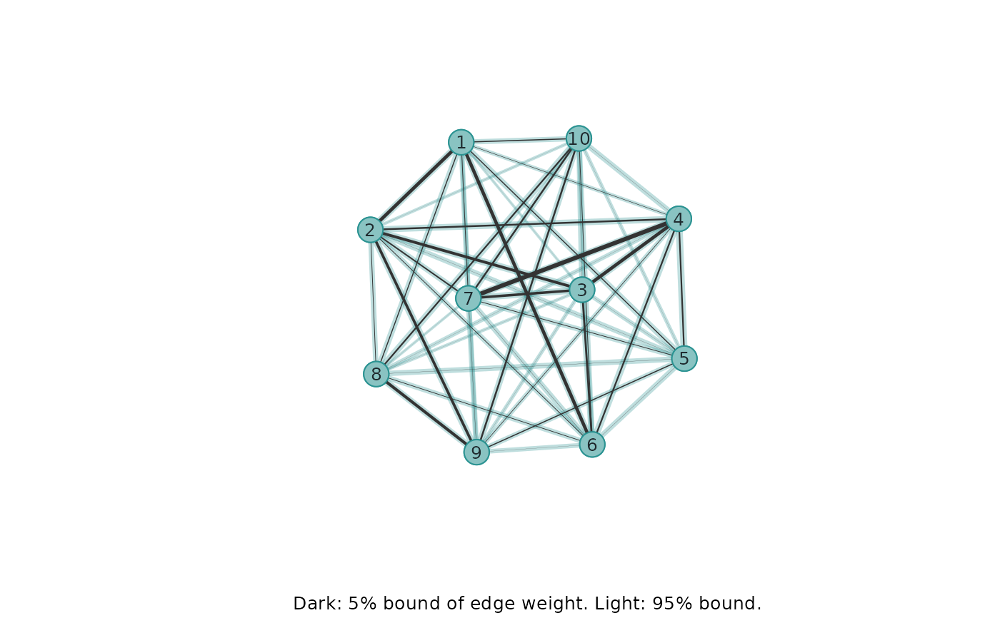
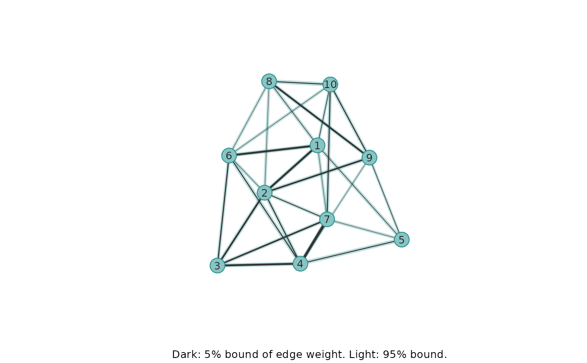

Draws a sociogram (a diagram of the network) in which each edge is shown by two overlapping lines: a dark line whose width is the lower bound of the credible interval, and a wider, translucent line whose width is the upper bound. A credible interval contains the true edge weight with the given probability, according to the model. Edges with a large difference between the two lines are uncertain, usually because the dyad was rarely observed.
Usage
plot_network(
obj,
ci = 0.9,
lwd = 2,
threshold = NULL,
threshold_on = c("median", "lower"),
show_all_nodes = TRUE,
layout = NULL,
...
)Arguments
- obj
A fitted
bison_modelobject.- ci
Width of the credible interval, e.g.
0.9for a 90% interval.- lwd
Scaling factor for edge widths. For binary models the width is the edge weight (a probability) multiplied by
lwd; for count models, rates are rescaled so the widest edge has widthlwd.- threshold
Hide edges whose weight (see
threshold_on) is below this value. This only affects the plot.NULLshows every edge.- threshold_on
Which estimate to compare with
threshold: the posterior"median"(default) or the"lower"bound of the credible interval.- show_all_nodes
If
TRUE(default), nodes with no remaining edges are still drawn.- layout
Optional layout matrix (as returned invisibly by a previous call), so several networks can be drawn with nodes in the same positions.
- ...
Further arguments passed to
igraph::plot.igraph()to change how nodes are drawn, such asvertex.size,vertex.color,vertex.label.colororvertex.label.cex. These replace the default node style.
Examples
sim_data <- simulate_bison_model("binary", aggregated = TRUE)
fit_edge <- bison_model(
(event | effort) ~ dyad(node_1_id, node_2_id),
data = sim_data$df_sim,
model_type = "binary_conjugate",
priors = get_default_priors("binary_conjugate")
)
plot_network(fit_edge, lwd = 5)

plot_network(fit_edge, lwd = 5, threshold = 0.3)
